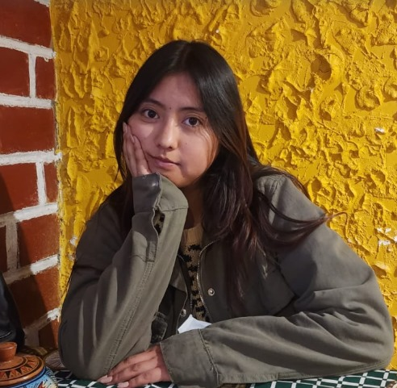

Presentación
¡Hola! 👋, soy Kristell Jara Pacori :) , tengo 20 años y resido en la ciudad de Arequipa. Nací en Juliaca, una ciudad que siempre llevo en el corazón 💜. Este espacio es una forma de compartir quién soy y hacia dónde quiero llegar. ✨
Sobre mí
Soy una estudiante apasionada por la innovación, la gestión y el desarrollo de proyectos que aporten valor a mi comunidad. Me interesa el emprendimiento y busco aplicar mis conocimientos para generar un impacto positivo en el país.
Educación
Universidad Católica San Pablo – Administración de Negocios
Habilidades
- Gestión de proyectos
- Creatividad e innovación
- Trabajo en equipo
- Neuromarketing
Hobbies
- Leer
- Cantar
- Ver películas
- Disfrutar del atardecer 🌅
Intereses
- Event Planner y Catering
- Maquillaje y Moda
- Diseño y Bisutería
- Marketing
Compañeros
Docente
Contacto
📧 kristell.jara@ucsp.edu.pe
🔗 LinkedIn